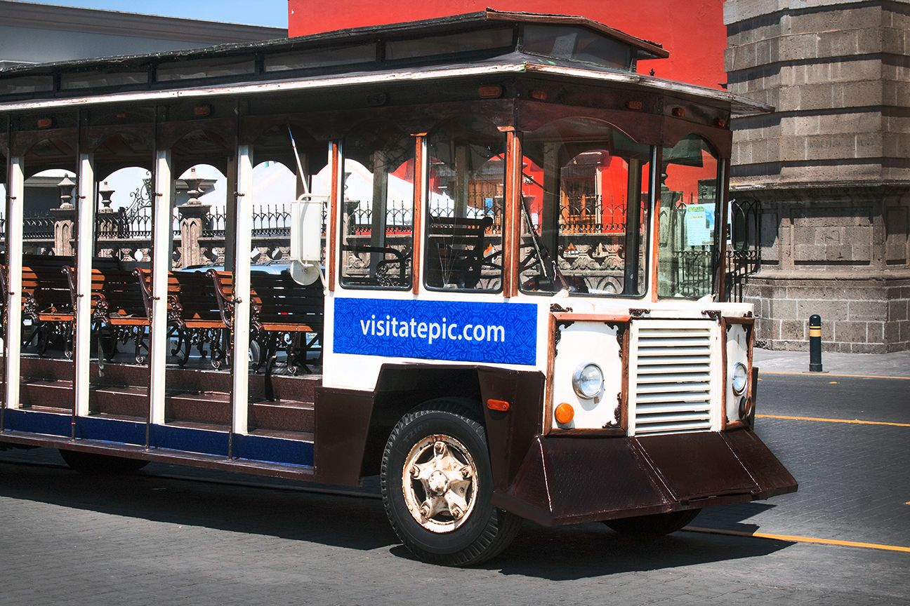

hay que ir personalmente al modulo de información turística frente a la catedral de Tepic a comprar los boletos (temprano por que se agotan) tienen un costo de $40 adultos y niños $30 de 4 a 11 años
| Tipo Recorrido | Descripcion general | Hora de inicio | Hora de salida |
|---|---|---|---|
| Recorrido Nocturno | Se les señala a los pasajeros sobre las leyendas | 8:00 P.M | 10:00 P.M |
| Culturales | Las celebraciones se llevan a cabo con danzas autóctonas, peregrinaciones y juegos pirotécnicos. | 5:30 | 6:45 |
| Musical | Grupos musicales de nayarit, en especial el mariachi | 11:30 A.M 13:00 A.M 15:00 A.M |
12:45 A-M 14:45 P.M 17:45 P.M |
| Gastronomico | Los mejores platillos hechos por los mejores chef que pertenecen a nuestra tierra nayarita | 11:30 A.M 13:00 A.M 15:00 A.M |
12:45 A-M 14:45 P.M 17:45 P.M |